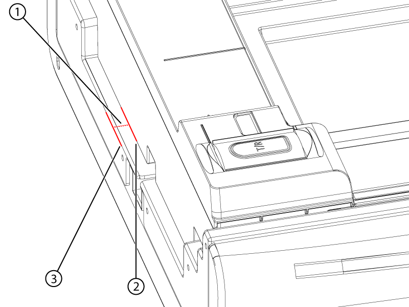
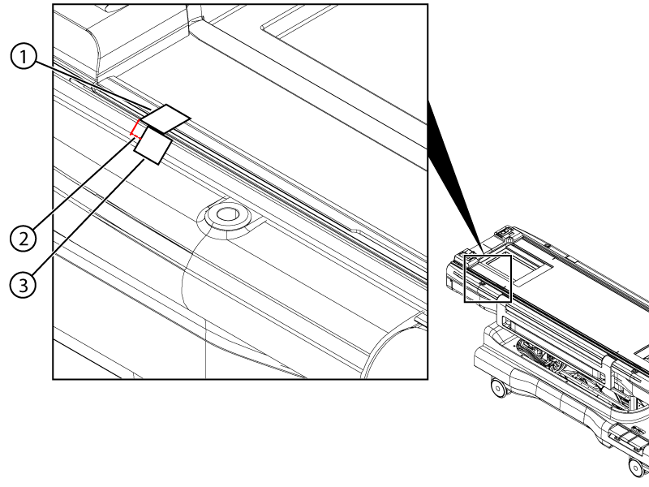
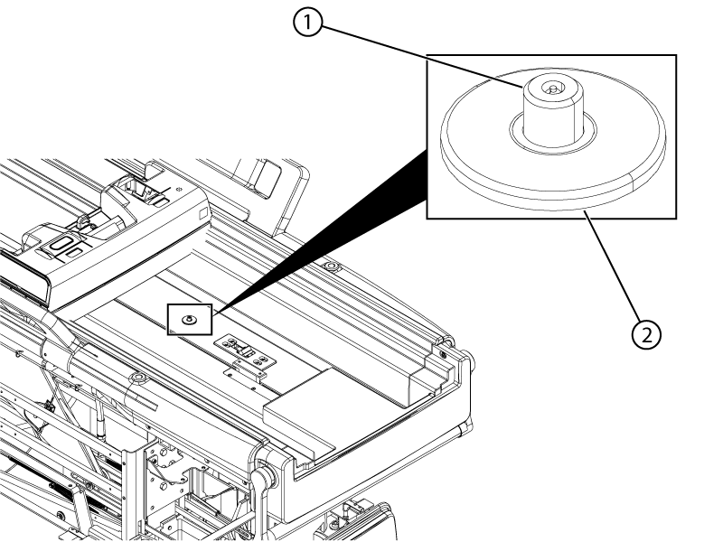
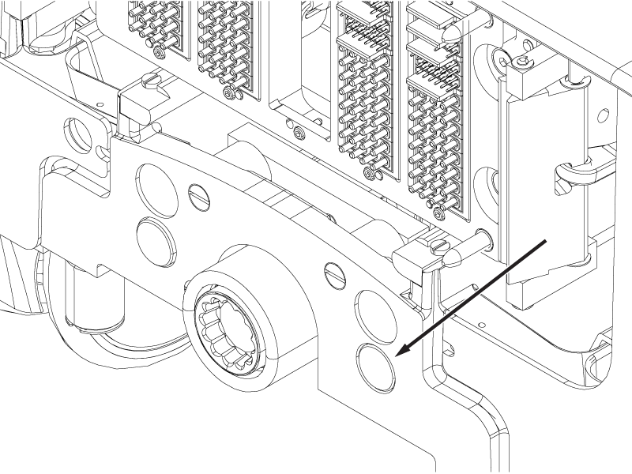
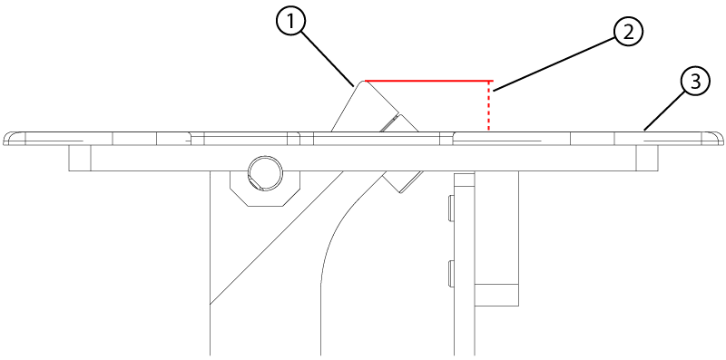
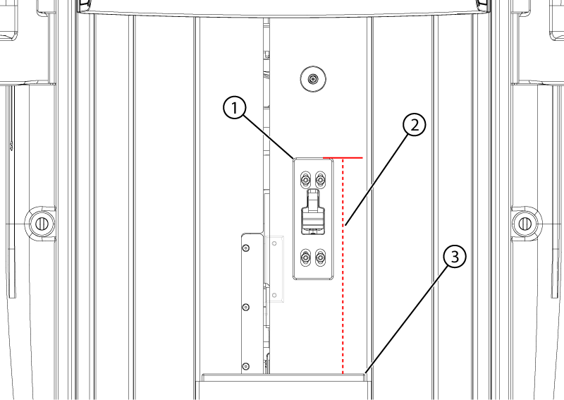
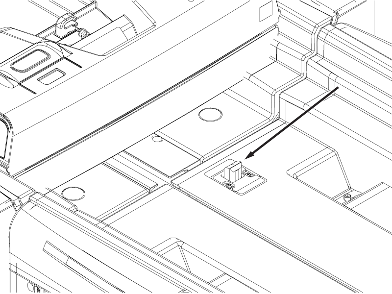

- Object ID: 00000018WIA30C16A40GYZ
- Topic ID: id_2016158 Version: 2.9
- Date: Apr 23, 2020 8:51:36 PM
Checking the dockable table interlocks
Checks the measurements and operation of the table interlocks.
Prerequisites
| Personnel requirements | |||
|---|---|---|---|
| Required persons | Preliminary requirements | Procedure | Finalization |
| 1 | - | 15 minutes | - |
| Tools and test equipment | |||
|---|---|---|---|
| Item | Quantity | Part number | Manufacturer |
| Stainless Steel Ruler | 1 | 46-198452P2 | - |
Procedure
- Undock the table and move it out of the scan room.
- Make sure the distance from the tabletop to the cradle at the bore end is 2 mm or less.
Figure 1. Home position measurement 
1 Cradle home position gap 2 Magnet end of the cradle 3 End of the tabletop - Make sure the home switch activates 4 ± 2 mm from the home position as follows:
- Push the cradle to the home position (towards the handle end).
- Put a piece of masking tape on the table from the cradle to the side of the table.
Figure 2. Home switch travel measurement 
1 Cradle tape 2 Travel measurement 3 Tabletop tape - Cut the tape between the cradle and the table.
- Listen for the home switch to click while slowly moving the cradle towards the bore end of the table. Stop moving the cradle when the switch clicks.
- Measure the distance from the edge of the cradle tape to the edge of the table tape.
- Dock the table.
- Push the cradle out until the secondary latch is exposed.
Figure 3. Secondary latch 
1 Secondary latch pin 2 Secondary latch housing - Make sure the top surface of the secondary latch pin is 0-3 mm below the surface of the latch housing.Note: A measurement of 0-3 mm is within specification for the secondary latch pin. However, a value of 0-1 mm must be entered in ICW for this measurement.
- Undock the table.
- Press and hold the Dock pedal to override the primary latch and push the cradle approximately 80 mm off the tabletop surface.
- Push and hold the rod button and pull the cradle off the tabletop surface until the cradle is clear of the secondary latch.
CAUTION Pinching hazardIf the table moves down unexpectedly, injury could result or the tabletop may be damaged.Push the button shown in the illustration and not the button on the opposite side of the table.Figure 4. Cradle rod button 
- Make sure that the latch pin is a minimum of 6.35 mm above the latch housing.
- Make sure the distance from the top surface of the stop block to the top surface of the flipper housing is within specifications.
Flipper housing revision Height specification Rev 3 (white painted) 12 ± 0.5 mm Rev 4 (unpainted aluminum) 13 ± 0.5 mm Figure 5. Stop block measurement 
1 Stop block 2 Stop block height above housing 3 Flipper housing - Make sure the distance from the front surface of the cradle stopper to the front surface of the flipper housing is 293 (+1/-0) mm.
Figure 6. Flipper position 
1 Flipper housing 2 293 (+1/-0) mm 3 Cradle stopper - Dock the table and position the cradle with the bore end of the cradle flush with the front end of the front bridge.Note: The cradle should not overhang the front bridge.
- Press the table down pedal. The table should not move down.
- Press the undock pedal. The table should not mechanically undock.
- Press and hold the dock down pedal while the cradle is in the bore. The table should not move down.
- While continuting to hold the dock down pedal, press the home button or pull the cradle back to the home position. Release the down pedal once the cradle reaches the home position.
- Press the dock down pedal. The table should move down.
- Undock the table.
- Make sure the cradle does not move more than 2 mm towards the bore end of the table.
- Dock the table.
- Move the cradle into the bore until the primary latch bar is exposed.
Figure 7. Primary latch bar 
- Press the primary latch bar down until it stops.
- Make sure the maximum change in height of the primary latch bar is between 0 and 1 mm.
- If any of the above checks fail or measurements are out of limits, do Adjusting the dockable table interlocks.